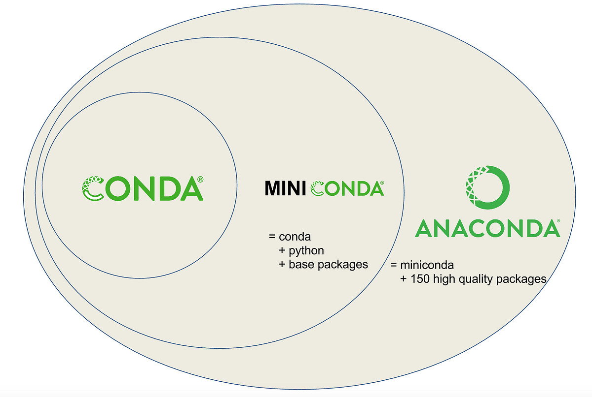
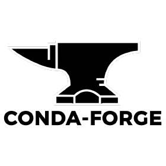

Python’s Conda Jungle: a no-brainer from Anaconda to Miniforge
If you are starting with Python you are most likely have a question: should I go straight and just install/use Python or do I need anything else?
Or likely that you started your journey with Anaconda all-in-one release being promoted as the “World’s Most Popular Data Science Platform” (well, by Anaconda themselves).
Or you may came across some tutorials that refer to mysterious “conda”. So. Do you need it? Why? Which? Fortunately, not “how much” - its free!
Conda typically refers to the package and environment manager, while “Anaconda” and “Miniconda” are distribution options. “Package and environment manager” means what it means: “manages your packages” and “manages your environments”.
Lets do the “package manager” part first: you need a package manager to helps you find, install, update, and remove software packages, libraries, or dependencies in a consistent and controlled manner. This ensures that your software projects have access to the required components and that different projects don’t interfere with each other.
Example:
We have a freshly installed Python and we want to do some simple ml wrangling. We need to have scikit-learn package. So we go to trusty terminal and pip
pip install scikit-learn
just to discover (hopefully with no really big time wasted) that it’s not gonna work and we also need another package,
pip install numpy
With conda, you just nail it with one line:
conda install scikit-learn
Enjoy!
Now, the environment management part is that it’s a good practice to work in environment - think of your cosy nook where you know everything, adjust everything (e.g. put all your comfort teddies around, aroma candles :)) and just WORK.
In a more computer manner that “cosy nook” is your envirnoment, or “virtual environments”, or “conda environments.” These environments are separate from the system-wide environment and from each other. This isolation helps you keep your projects self-contained and free from possible conflicts, like conflict between different version of python or packages. Think about that as an ultimate manifestation of “work-life” balance “:) put your”life” and “work into separate environments :)
Conda help you create isolated environments for different projects, help you organise your projects. This is particularly valuable in data science, scientific computing, and software development, where complex and interdependent libraries and dependencies are common. You can specify the exact versions of packages and dependencies to use in each environment, making it easier to reproduce your work and share it with others.
Best of all, once you have your “cosy nook” environment, you can easily export it with conda as well:
conda env export > environment.yml
and use it later.
So now you are sold on condas, let’s get the right conda for you.
Anaconda: The Comprehensive Toolbox

When to Use Anaconda:
Anaconda is your go-to choice if you’re seeking an all-in-one data science platform. It bundles together Conda, Python, and an extensive collection of pre-built data science libraries and tools. It’s an ideal solution for data scientists, researchers, and analysts who want a hassle-free, ready-to-use environment for their work.
Installation:
Download Anaconda from the official website and install it.
Why Anaconda?
- Ginny in a bottle (but big bottle…):
Pre-packaged Libraries: Anaconda comes with hundreds of pre-installed libraries, including NumPy, pandas, scikit-learn, Jupyter, and more, saving you the effort of installing them individually.
Easy Environment Management: Create isolated environments for different projects with specific dependencies, ensuring reproducibility.
Available for Windows, macOS, and Linux.
Beware:
The gift of Anaconda comes with a big box of “commitments”, a large installation size, eating your resources and coming with lots of other software that you probably never need….
Miniconda: Size does not matter when it comes to strength

Miniconda is a minimal Conda installer that allows you to build a customized environment tailored to your specific requirements. It’s the same ginny but in a IKEA packaging :)
Why Miniconda:
Perfect for users who want more control over their environment and prefer a lightweight footprint. It goes straight to the minimalist soul :)
Installation:
Download Miniconda from the official website and install it. After installation, use Conda to create a new environment and install packages as needed.
Why Miniconda?
Small, but mighty: Miniconda is a lean installer, allowing you to install only what you need.
Control freak yourself!: Build environments with precisely the packages you require, keeping your system free from unnecessary clutter.
Quicky: fast to install, making it a great choice for rapid environment configuration.
Beware:
Let’s get dirty: You’ll need to set up environments and install packages manually, which may require more initial effort.
Conda-Forge: people’s princess

Conda-Forge is a community-driven collection of Conda packages.
It’s a fantastic resource for users who require packages not available in the default Anaconda repository. You can access an extensive range of community-contributed packages through Conda-Forge.
Example: you have your new shiny Apple Pro macbook and “lucky” enough for it to be on M1 chip. And “lucky” enough to want to run your advanced ML models. Prepare for the trouble.. which we will discuss later :)
Installation:
Add Conda-Forge using this command in your Terminal:
conda config --add channels conda-forge.
Install packages from Conda-Forge as needed.
Why Conda-Forge
The world is not enough: provides an extensive selection of packages that are not found in the default Anaconda repository.
Alone we can do so little, together we can do so much: maintained and contributed to by the Conda community, ensuring up-to-date and well-maintained packages.
Beware:
Trust your sources: while Conda-Forge offers many valuable packages, be aware that they are not officially maintained by Anaconda Inc. Ensure you trust the source of the packages you install.
When to Use What: instead of boring summary
Anaconda:
Choose it for a comprehensive, out-of-the-box data science environment with pre-packaged libraries.
Ideal for beginners and those who need a complete solution.
Miniconda:
- Opt for a lightweight, customizable installation if you want more control over your environment and prefer a minimal footprint.
Conda-Forge:
best of its all (yeah, I am a people’s person!)
you have a “buggy” setup
you need additional packages beyond what’s available in the default Anaconda repository.
Stay on track!
In this world of no-commitments, stay tuned for what’s happening and be ready to evolve!
Latest and greatest: the latest conda’s news and developments are critical in data science and scientific computing.
Top security: Regular updates ensure you benefit from security patches and bug fixes, enhancing the stability of your environment.
People’s power: Monitoring the community’s activity around Conda packages can provide insights into the popularity and reliability of specific libraries and tools.